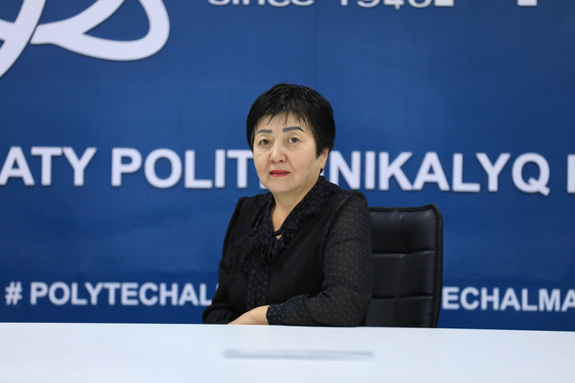
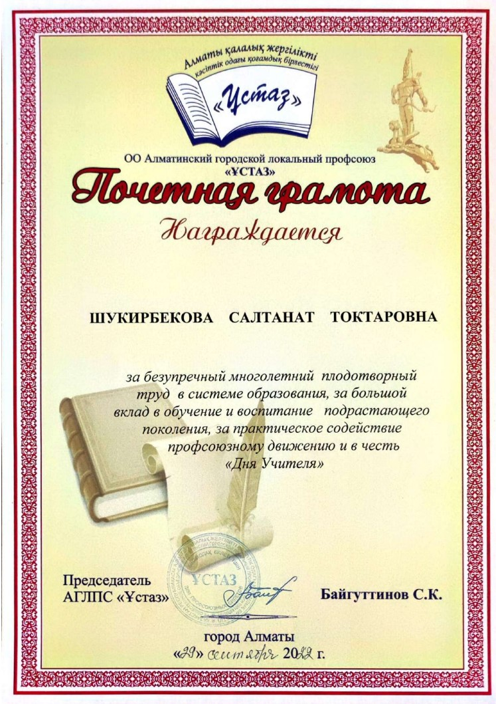
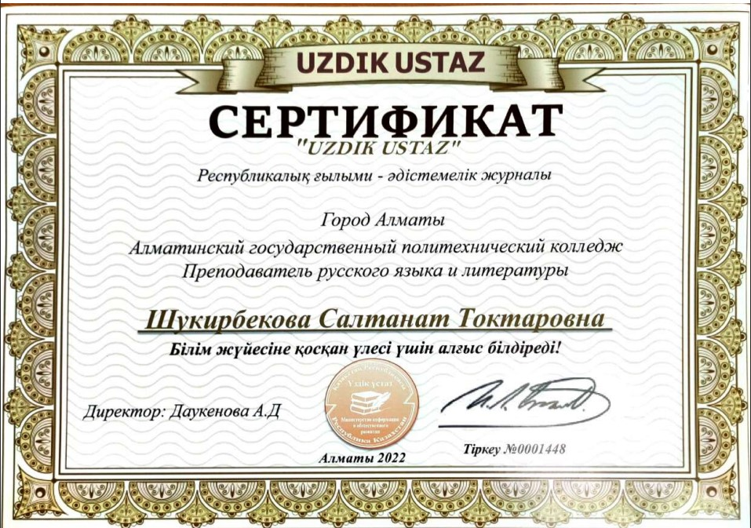

Резюме✍

Шукирбекова Салтанат Токтаровна.
Орыс тілі және әдебиеті оқытушысы
Шукирбекова Салтанат Токтаровна, 1966 жылы 23 тамыз айы. Семей облысы Аягөз ауданы Сергиополь ауылында қызметкерлер отбасында дүниеге келді. 1983 жылы Сабыржан Ғаббасов атындағы орта мектепті аяқтап, 1983 жылы Украина. Нежин қаласында '' Гоголь атындағы мемлекеттік педагогикалық институтына'' оқуға түсті, Аягөз қаласындағы '' Балдырған '' балабақшасында тәрбиеші болып жұмыс жасады. 1993 жылы Жамбыл ауданында Умбеталы орта мектебінде орыс әдебиеті пәнінде мұғалім болып жұмыс атқарды.
2005 жылдан бастап '' Алматы мемлекеттік политехникалық колледжінде '' орыс әдебиеті пәнінен жұмыс жасап келеді.
Марапаттары

